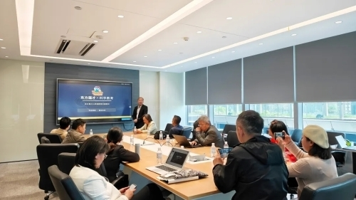
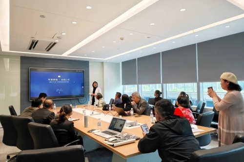
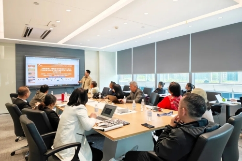
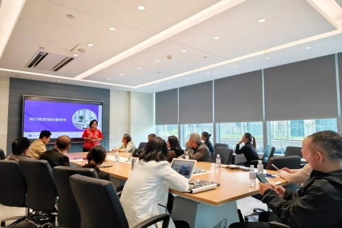
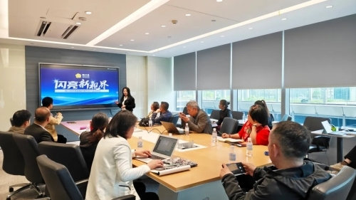

春意盎然的四月，一场聚焦教育创新的科创沙龙在恒生云谷国际创新中心火热开启。本次活动由项目组织者发起、恒生云谷承办，吸引了来自全国各地的十余个教育及相关领域的创新项目方代表与行业专家齐聚一堂。恒生云谷以高规格的交流空间，为教育创业者们搭建起高效对接的桥梁。
清晨，众多教育项目方代表便已陆续抵达。他们带着各自在教育赛道的深耕成果与创新构想，覆盖青少年潜能开发、科创教育、智慧教育平台、心理健康赋能等多个细分领域，旨在这场专属教育人的盛会中碰撞思想、链接资源。
沙龙现场，各项目方轮番上阵，精彩路演，全方位展示了从底层能力开发到顶层资源整合、从传统学科提分到前沿科技应用的教育创新生态。“剑桥爸爸”超能力特训营、“东方蕴才”少儿科创教育、“动听中国话”语言艺术盛典、“乐学易考”中高考提分法宝、“星越际”青少儿智慧生活平台等项目的创始人及核心团队，与专注于青少年精神健康的脑机接口项目、军垦诗歌研学、航空科普研学、幸福父母课堂等特色项目的负责人齐聚一堂。路演开始前，大家便已展开热烈交流。
在座诸位来自不同的细分赛道——有的深耕学科提分，有的专注素质拓展，有的聚焦心理健康，有的赋能家庭教育——但共同的目标都是“为孩子的成长赋能”。怀揣着对教育事业的初心与热忱，这些平日里各自忙碌的创业者们，在这个早晨找到了同频的伙伴。

虽然时间紧凑，每位代表未能详尽展示项目全貌，但均精准聚焦核心亮点，展开分享。从科技赋能学习能力提升的创新训练体系，到融合传统文化与现代科创的教育方案；从关注青少年心理健康的智能干预技术，到覆盖全年龄段的护眼教育生态——不同维度的教育创新实践，让现场观众深刻感受到教育行业的多元活力与无限可能。

交流环节气氛更为热烈，轻松愉快的氛围打破了行业壁垒。项目创始人、行业代表们围坐一堂，就教育痛点解决方案、行业发展趋势、资源整合路径等话题各抒己见。大家主动交换想法，分享实战经验，不少参会者在深入沟通后互留联系方式，为后续合作埋下伏笔，用实际行动践行着对教育事业的热忱与担当。

作为承办方，恒生云谷始终秉持“让科技创新生生不息”的使命，不仅在投融资领域为资方与项目方搭建高效对接的桥梁，更积极为各类科创交流活动提供优质空间与资源支持。此次免费开放国际创新中心场地，正是恒生云谷助力教育行业创新发展、促进产业资源深度融合的生动实践。

未来，恒生云谷将继续发挥平台优势，搭建更多跨领域、高品质的交流平台，为各行各业创新注入源源不断的动力，与各方携手共创美好未来。

本次沙龙在热烈的氛围中圆满落幕，但教育创新的探索永不散场。期待下一次相聚，再谱科创赋能的新篇章！